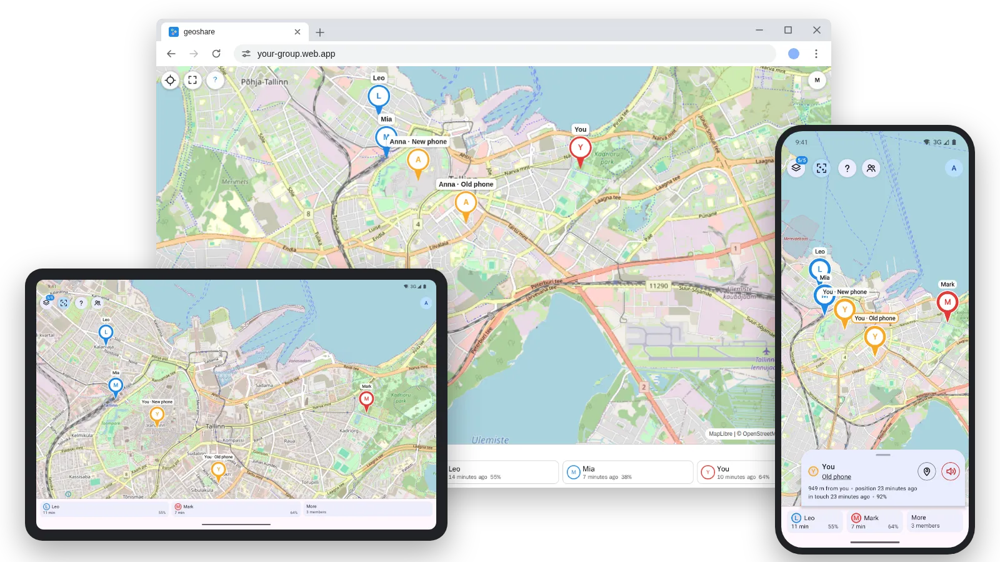
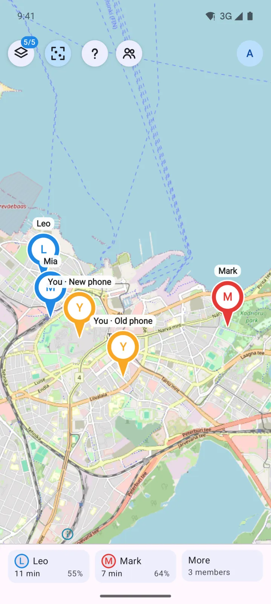
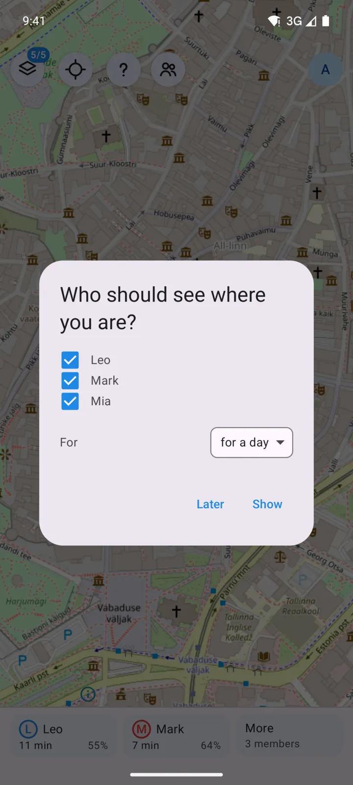
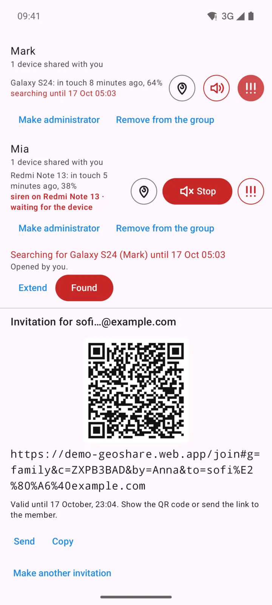
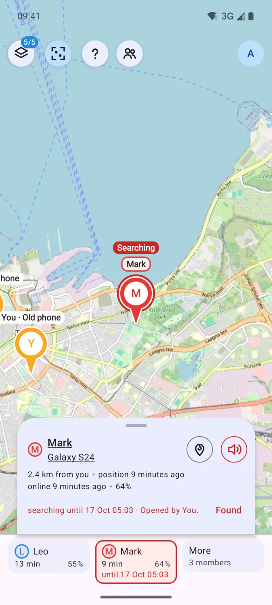
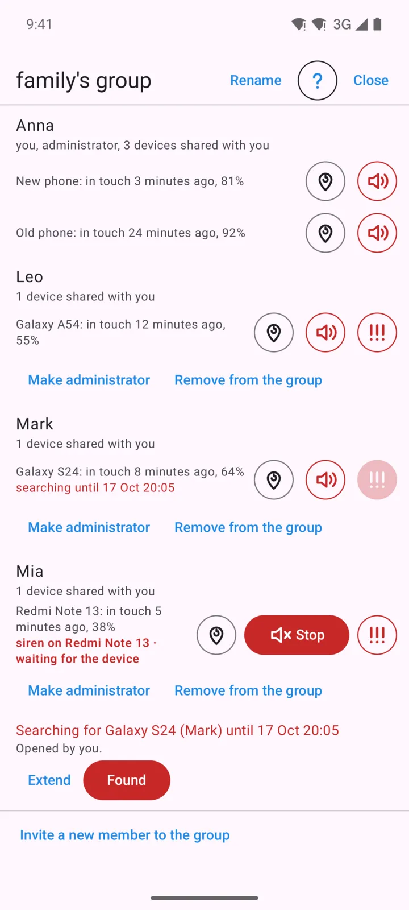
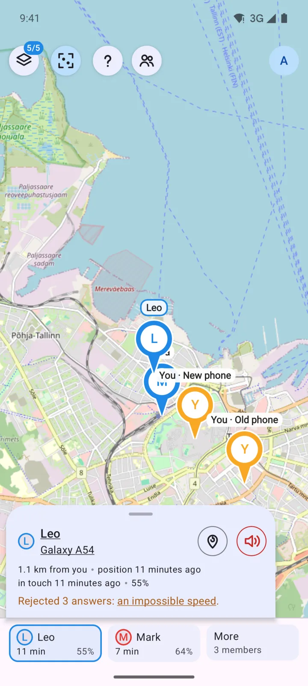
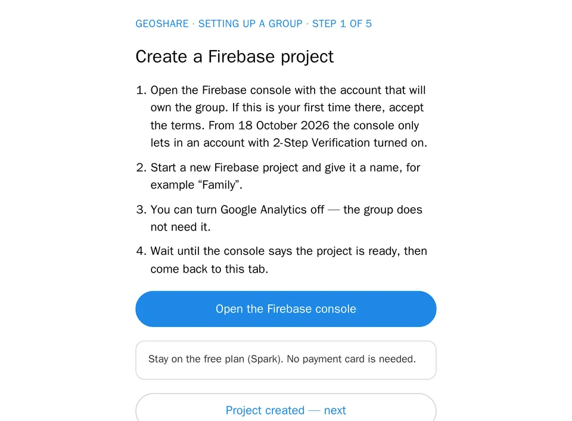
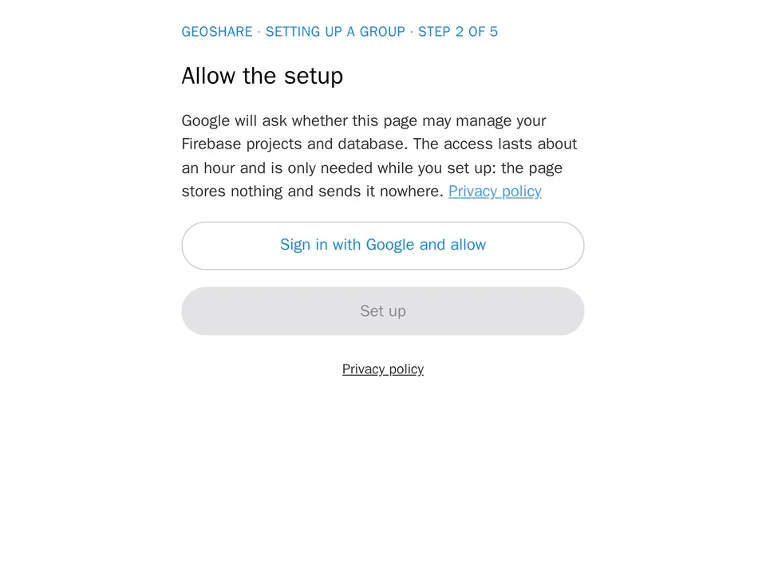
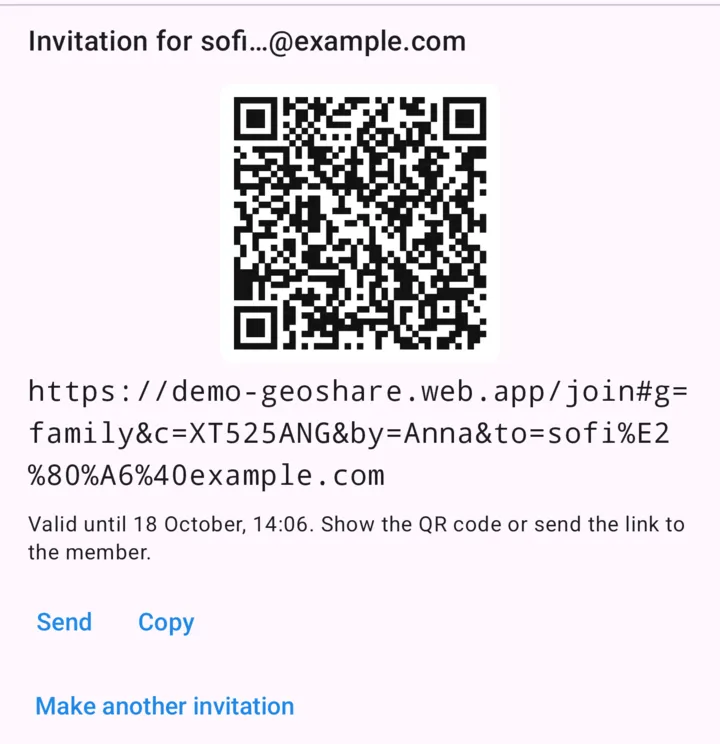

Where your family is — on your own free Firebase
Android and a browser. Ordinary Google accounts. No server of ours.


Everybody on one map 
Share with whom you choose, until when you choose 
Join by a QR code 
Search for a member 
A siren on a lost device 
False positions held back
A group in three steps

1Create a free Firebase project 
2Open the setup page 
3Send the link
Free, within Firebase's daily limits
- 50,000reads a day
- 20,000writes a day
- ~5%what a family with two devices uses a day
Past a limit the database stops answering until the quota resets at midnight Pacific time. Keep an eye on usage in the Firebase console.